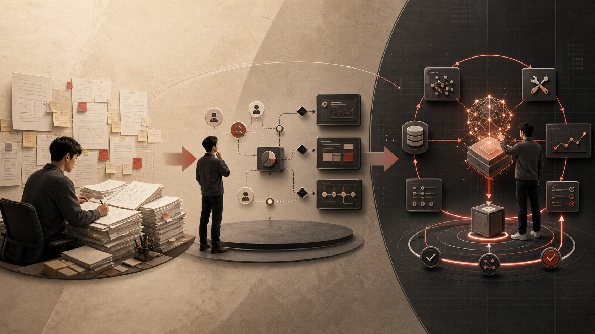
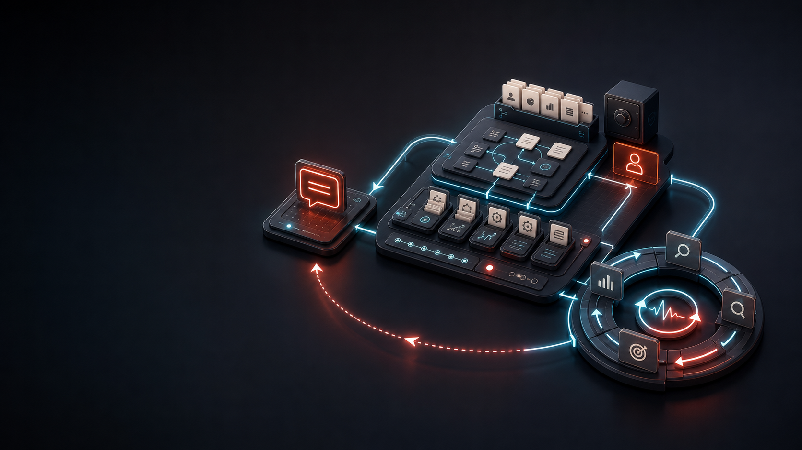
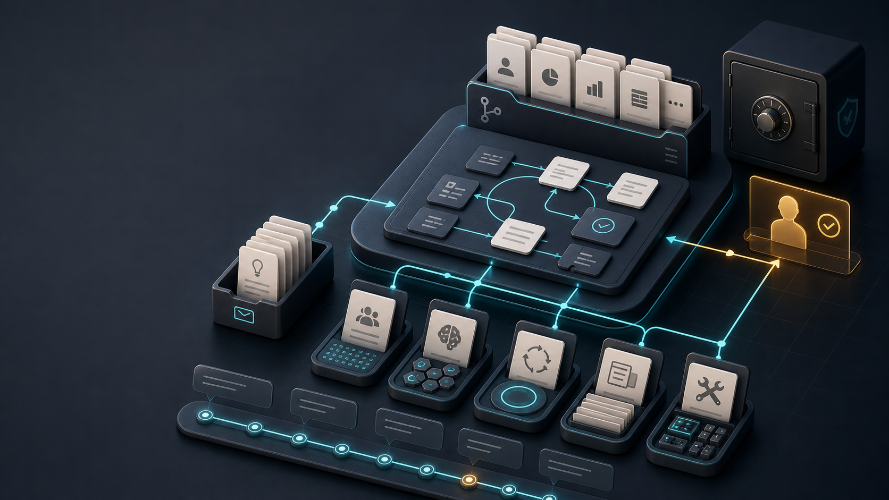
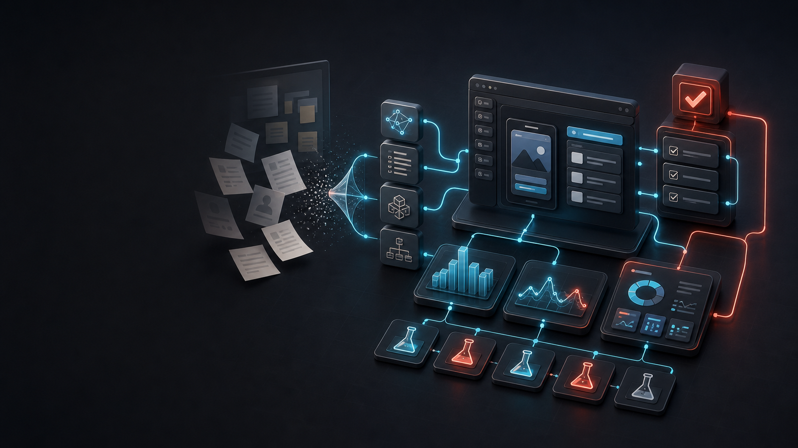

Map Pro Training · 2026
AI 原生组织下的
PM 自进化实践
Prompt → Harness → Loop → Builder
不是工具课
是工作系统课
也是一次危机预演
Why This Talk
AI 不是兴趣题，
是生存题。
只要学得够慢，就不用学了？这个玩笑正在变得危险。
Non-Consensus
今天正确的 AI 共识，
可能 90 天后 就过期。
Course Map
今天分三段。
Part 3
成为 Builder
参加 Hackathon
AI Native Organization
AI 原生组织，
不是“用了 AI 工具”。
而是把大模型作为默认生产力、默认协作对象、默认执行系统。
Yu Jun Lens
PM 的核心价值，
一直在随时代迁移。
维度
品牌管理
软件时代
移动互联网
AI 时代
时间 / 年份
1931
1990s-2000s
2010s
2024+
行业
快消 / 品牌
软件 / SaaS
App / 平台
Agent / AI 原生
PM 定位
品牌经营者
需求交付者
体验增长者
系统 Builder
详细展开
观察消费者、协调资源，把品牌当成独立业务经营。
把客户问题翻译成需求、规格、排期和可交付功能。
围绕用户旅程、数据指标、增长漏斗和网络效应迭代。
设计人、模型、工具、数据、Eval、Human Gate 和反馈 Loop。

PM Definition Shift
不变的是 价值判断。
变化的是 PM 要设计
一套 人机协作系统。
Software Development Shift
软件开发的对象变了
AI 原生
意图 → 上下文 → 工具调用 → 评估 → 人类闸门 → 持续 Loop
PM 新交付
Intent、Tool Contract、Eval、Fallback、Human Gate
LLM Basics
大模型不是数据库。
它很擅长 补全。
给定上下文，它预测下一个最可能的 token，并持续生成下去。
Interaction Demo
不要急着让模型回答。
先让它问你。
容易出问题帮我写一份 AI 餐厅推荐 Agent 的 PRD。
更好的方式请不要直接写 PRD。先问我 10 个必须知道的问题，并把已知事实 / 待确认假设 / 高风险缺口分开列出来。
PM Workbench
Prompt 是一次对话。
Harness 是你的 PM 工作台。
Tools
Comate
度 Cici / 度度
GitHub Kit
Core Claim
AI 对 PM 的影响，
不是提效，
是重构工作系统。
2023 → 2026
从聊天框，到工作系统
2025
Agent
Builder
AI 完成任务，PM 做 Demo
2026
Harness
Loop
AI 进入持续运行的工作系统
Four Layers
PM 最容易停在模型层。
价值在上面三层。
Harness
上下文、Skills、工具、状态、规则、评测
Prompt / Model
对话、生成、推理、多模态
Market Signal
未来一段时间，知识工作会被重新定价。
市场不会长期为“只会转述需求”的 PM 买单。
Cases
大厂实践的共同方向：
从 Copilot 到工作环境
百度 Comate
Skills / Subagents / Page Builder
经验开始变成可调用能力。
美团
复杂度不会自动收敛
规则、测试、评估要进入闭环。
Bad Metric
“AI 生成了多少”
不是价值。
真正要看：决策周期、返工、质量、实验速度、用户结果。
“When a measure becomes a target, it ceases to be a good measure.”
Goodhart / Campbell 式提醒：指标一旦变成目标，就可能扭曲行为。
Meituan Lesson
31万
行代码重构提醒我们：AI 不会自动让复杂度收敛。
来源：美团技术团队公开文章，正式分享前再核验原始口径。

Main Framework
PM 的 AI 进化三部曲
Prompt Engineering
好 Prompt 的本质，
是 好任务定义。
Decision
Context
Constraint
Task
Eval
Limit
没有状态、工具、权限、验收和反馈，Prompt 只能优化一次输出。
1一次上下文
2难复用，难沉淀
3不能形成现实闭环
Harness Engineering
Harness 不是 Prompt 库。
它是 AI 的 工作环境。
Skills
可复用的调研、分析、PRD Critic、实验设计能力
Tools
搜索、文档、数据、原型、GitHub、业务 API
Feedback
Rubric、用户反馈、业务指标、失败样本
Loop Engineering
一次生成不重要。
下一轮怎样变好才重要。
Loop Engineering 仍是新兴概念，不要包装成成熟共识。
“find the simplest solution possible”
Source: Anthropic, Building effective agents
Should You Loop?
Loop 不是免费的。
先判断它 值不值得跑。
1任务是否重复出现？
2结果能否被机器或规则验收？
3预算、日志、复现和 review 是否到位？
Cybernetics
控制论视角：
目标、反馈、调节
反馈
用户行为、市场变化、数据指标、销售/客服/运营信号
调节
改需求、改策略、改产品、改资源投入、停止错误方向
Signal Theory
未来 PM 的壁垒：
构建自己的 信号系统。
1知道哪些信号重要
2知道哪些只是噪声
3知道如何主动验证
Loop Contract
不要先做系统。
先写一份 Loop 合同。
PM Loop
一个需求分析 Loop
PM
Owner
Signal
Analyze
Decide
Verify
Learn
用户反馈、客服问题、数据异常、竞品动作进入系统；AI 辅助聚类与归因；PM 判断证据强度；小流量验证；更新下一轮。
Toolkit
把一次分享，变成可复用资产
hackathon-kit/
Repo + Demo + Eval
AI Native PM Kit：一套可复制的 PM 工作系统。
GitHub Workbench Demo
怎么把仓库变成自己的 PM 工作台？
1Fork / Clone 到私有仓库
2填 Project Brief、Glossary、Decision Log
3用如流 CLI 导入合规知识摘要
4Commit 工作台状态，再跑 Skill 和 Loop

把 PM 的上下文、判断、任务和反馈沉淀成一个可版本化的工作系统。

Builder
当 Demo 成本下降，
PM 不能只做需求传递者。
Builder 不是改行写代码，而是把模糊判断压缩成可点击、可调用、可测试的证据。
“The best way to predict the future is to invent it.” — widely attributed to Alan Kay
Code Is Cheap
当代码越来越便宜，
取舍 会越来越贵。
Five Levels
AI-Native PM 五阶跃迁
L5
Builder & Loop Owner
会创造与迭代
Hackathon
Hackathon 是 PM 从表达者变成创造者的高压训练场。
Repo
Demo
Eval
Decision Log
Backup Plan
Hackathon Workbench
Hackathon 不只交 PPT。
交一个能跑的工作台。
Pitch
Decision Log
Backup Plan
Judging Rubric
7-Day Challenge
从明天开始，
跑一条小而真实的闭环。
1选一个高频真实任务
2填 Project Brief，跑一个 Skill
3设计 Loop，记录 Decision Log
Closing
最后，带走三件事。
交流
加微信，后续一起共创 PM Workbench。